← 概率资料目录考点 30 · 用样本估计总体 · 练习
资料来源：学科网一轮复习笔记 · 共 20 题
用样本估计总体思维导图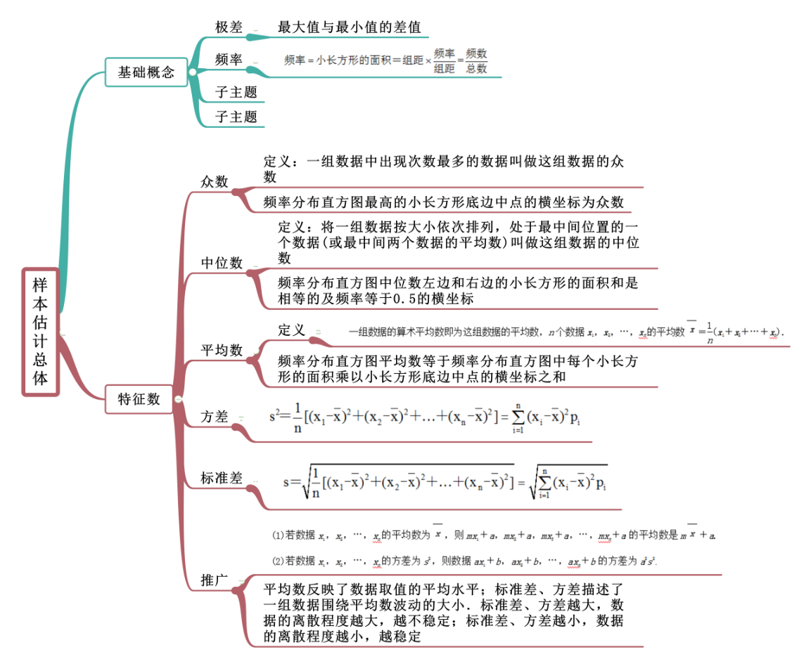
点击图片查看原图第 1 题
1．如图是某学生在七次周考测试中某学科所得分数的茎叶图，则这组数据的众数和中位数分别为（
）
查看答案与解析
【答案】D
【解析】由茎叶图可得，这几个数据分别是79,83,83,84,86,87,93；故众数为83，中位数为84；故选：D
第 2 题
2．如图，茎叶图记录了某数学兴趣小组五名学生在一次数学竞赛测试中的成绩（单位：分），若这组数据的众数是12，则 的值为（
）
的值为（
）
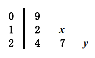
查看答案与解析
【答案】A
【解析】因为众数是出现次最多的数，且这组数据的众数为12所以
的值为2故选：A
第 3 题
3．在2014-2015赛季中，某篮球运动员前10场比赛得分的茎叶图如图所示，则该运动员这10场比赛得分的众数是（
）
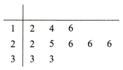
查看答案与解析
【答案】C
【解析】由茎叶图数据可得：26出现3次，次数最多，∴众数为26.故选：C.
第 4 题
4．在某技能测试中，甲乙两人的成绩（单位：分）记录在如下的茎叶图中，其中甲的某次成绩不清晰，用字母
代替．已知甲乙成绩的平均数相等，那么甲乙成绩的中位数分别为（
）
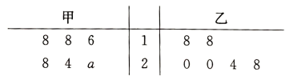
A．20
20
B．21
20
C．20
21
D．21
21
查看答案与解析
【答案】B
【解析】由题中数据可得：甲的平均数为，
乙的平均数为，
因为甲乙成绩的平均数相等，所以，解得：，
所以甲的成绩为：，其中位数为，
乙的成绩为：，其中位数为.故选：B.
第 5 题
5．已知甲､乙两组数据的茎叶图如图所示，则甲组数据的众数与乙组数据的中位数分别是（
）
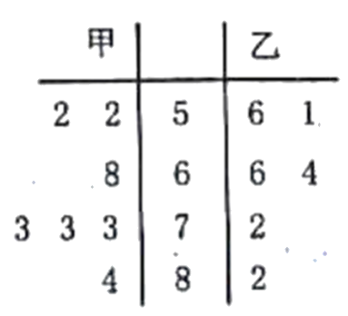
A．52，65
B．52，66
C．73，65
D．73，66
查看答案与解析
【答案】C
【解析】根据茎叶图中的数据知：
甲组数据的众数是；乙组数据的中位数是.故选：C
第 6 题
6．已知甲乙两组数据的茎叶图如图所示，若甲的众数与乙的中位数相等，则图中
的值为（
）
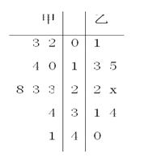
查看答案与解析
【答案】C
【解析】根据茎叶图可知，甲的众数为23，乙的中位数为，
因为甲的众数与乙的中位数相等，即，解得.故选：C.
第 7 题
7．设样本数据， ，…，
的平均数和方差分别为1和4，若
（a为非零常数，，2，…，5），则，，…，
的平均数和方差分别为（
）
，…，
的平均数和方差分别为1和4，若
（a为非零常数，，2，…，5），则，，…，
的平均数和方差分别为（
）
查看答案与解析
【答案】C
【解析】由题得均值
方差,
．故选：C
第 8 题
8．如果数据
的平均数为 ，方差为，则，，…，
的平均数和方差分别为（
）
，方差为，则，，…，
的平均数和方差分别为（
）
A．
，
B．，
C．，
D．
，
查看答案与解析
【答案】C
【解析】根据平均数的概念，其平均数为，方差为，故选C.
第 9 题
9．某地有两个国家AAAA级旅游景区——甲景区和乙景区.相关部门统计了这两个景区2019年1月至6月的月客流量（单位：百人），得到如图所示的茎叶图.关于2019年1月至6月这两个景区的月客流量，以下结论错误的是（
）
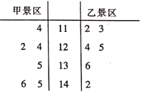
A．甲景区月客流量的中位数为12950人
B．乙景区月客流量的中位数为12450人
C．甲景区月客流量的极差为3200人
D．乙景区月客流量的极差为3100人
查看答案与解析
【答案】D
【解析】根据茎叶图的数据：
甲景区月客流量的中位数为12950人，乙景区月客流量的中位数为12450人.
甲景区月客流量的极差为3200人，乙景区月客流量的极差为3000人.故选：
第 10 题
10．已知数据
的方差是8，则数据
的方差是（
）
查看答案与解析
【答案】C
【解析】设
的平均数为 ，则，
，则，
因为数据
的方差是8，
所以.
设
的平均数为，方差为
则
,
所以数据
的方差是 ．故选：C.
．故选：C.
第 11 题
1．秉持“绿水青山就是金山银山”的生态文明发展理念，为推动新能源汽车产业迅速发展，有必要调查研究新能源汽车市场的生产与销售.下图是我国某地区
年至 年新能源汽车的销量（单位：万台）按季度（一年四个季度）统计制成的频率分布直方图.
年新能源汽车的销量（单位：万台）按季度（一年四个季度）统计制成的频率分布直方图.
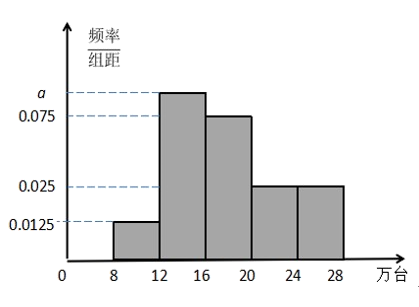
（1）求直方图中
的值，并估计销量的中位数；
（2）请根据频率分布直方图估计新能源汽车平均每个季度的销售量（同一组数据用该组中间值代表），并以此预计 年的销售量.
年的销售量.
查看答案与解析
【答案】（1），中位数为 ；（2）新能源汽车平均每个季度的销售量为
万台，以此预计
年的销售量约为
万台.
；（2）新能源汽车平均每个季度的销售量为
万台，以此预计
年的销售量约为
万台.
【解析】（1）由于频率分布直方图的所有矩形面积之和为，
则，解得，
由于，因此，销量的中位数为；
（2）由频率分布直方图可知，新能源汽车平均每个季度的销售量为
（万台），
由此预测
年的销售量为
万台.
第 12 题
2．某校从高一年级学生中随机抽取60名学生，将期中考试的物理成绩（均为整数）分成六段：， ，，…，
后得到如图频率分布直方图.
，，…，
后得到如图频率分布直方图.
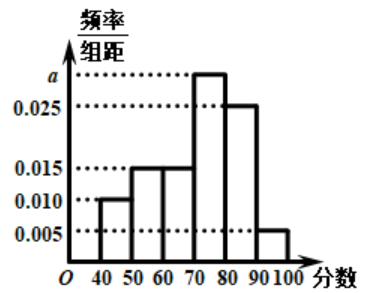
（1）根据频率分布直方图，估计众数和中位数；
（2）用分层抽样的方法从
的学生中抽取一个容量为5的样本，从这五人中任选两人参加补考，求这两人的分数至少一人落在
的概率.
查看答案与解析
【答案】（1）众数为75，中位数为73.33；（2）.
【解析】（1）由频率分布直方图得：
，
解得，
所以众数为：，
的频率为，
的频率为，
中位数为：.
（2）用分层抽样的方法从 的学生中抽取一个容量为5的样本，
的学生中抽取一个容量为5的样本，
 的频率为0.1，
的频率为0.1， 的频率为0.15，
的频率为0.15，
中抽到
人，
中抽取
人，
从这五人中任选两人参加补考，
基本事件总数，
这两人的分数至少一人落在
包含的基本事件个数，
所以这两人的分数至少一人落在
的概率.
第 13 题
3．某班主任利用周末时间对该班级
年最后一次月考的语文作文分数进行统计，发现分数都位于
之间，现将所有分数情况分为、、、 、、、
共七组，其频率分布直方图如图所示，已知.
、、、
共七组，其频率分布直方图如图所示，已知.
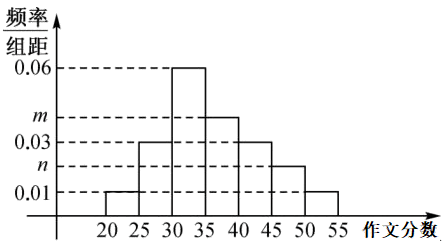
（1）求频率分布直方图中 、
、 的值；
的值；
（2）求该班级这次月考语文作文分数的平均数和中位数.（每组数据用该组区间中点值作为代表）
查看答案与解析
【答案】（1），；（2）平均数为，中位数为 .
.
【解析】（1）由频率分布直方图，得，
解得；
（2）该班级这次月考语文作文分数的平均数为
，
因为，，所以该班级这次月考语文作文分数的中位数为.
第 14 题
4．某网站举行“卫生防疫”的知识竞赛网上答题，共有120000人通过该网站参加了这次竞赛，为了解竞赛成绩情况，从中抽取了100人的成绩进行统计，其中成绩分组区间为，，， ，，其频率分布直方图如图所示，请你解答下列问题：
，，其频率分布直方图如图所示，请你解答下列问题：
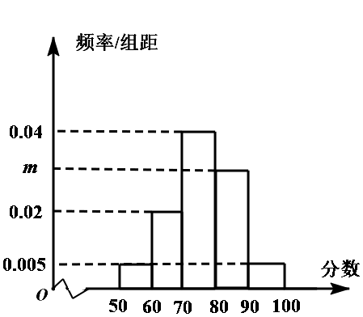
（1）求
的值；
（2）成绩不低于90分的人就能获得积分奖励，求所有参赛者中获得奖励的人数；
（3）根据频率分布直方图，估计这次知识竞赛成绩的平均分（用组中值代替各组数据的平均值）.
查看答案与解析
【答案】（1）
（2）6000人（3）76分
【解析】（1）由频率分布直方图的性质，可得，
解得.
（2）由频率分布直方图，可得成绩在
之间的频率为，
所以可估计所有参赛者中获得奖励的人数约为
人.
（3）根据频率分布直方图的平均数的计算公式，
可得平均分的估计值为
分.
第 15 题
1．演讲比赛共有10位评委分别给出某选手的原始评分，评定该选手的成绩时，从10个原始评分中去掉1个最高分、1个最低分，得到8个有效评分．8个有效评分与10个原始评分相比，不变的数字特征是（
）．
查看答案与解析
【答案】A
【解析】设10位评委评分按从小到大排列为，
则①原始中位数为，去掉最低分，最高分，后剩余，中位数仍为，
A正确．
②原始平均数，后来平均数，平均数受极端值影响较大，
与
不一定相同，B不正确；
③，
由②易知，C不正确．
④原极差，后来极差
可能相等可能变小，D不正确．
故选：A.
第 16 题
2．高铁、扫码支付、共享单车、网购被称为中国的“新四大发明”，为评估共享单车的使用情况，选了
座城市作实验基地，这
座城市共享单车的使用量（单位：人次/天）分别为，，…，，下面给出的指标中可以用来评估共享单车使用量的稳定程度的是（
）
A．，，…，
的标准差 B．，，…，
的平均数
C．，，…，
的最大值 D．，，…，
的中位数
查看答案与解析
【答案】A
【解析】表示一组数据的稳定程度是方差或标准差，标准差越小，数据越稳定故选：A
第 17 题
3．某公司 位员工的月工资（单位：元）为，，…，，其均值和方差分别为
和，若从下月起每位员工的月工资增加
元，则这
位员工下月工资的均值和方差分别为（
）
位员工的月工资（单位：元）为，，…，，其均值和方差分别为
和，若从下月起每位员工的月工资增加
元，则这
位员工下月工资的均值和方差分别为（
）
A．，
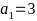
B．，
C．，
D．，
查看答案与解析
【答案】D
【解析】均值为
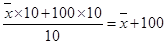
;
方差为
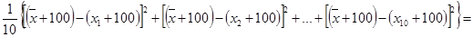
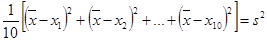
,故选D.
第 18 题
4．现对 有如下观测数据
有如下观测数据

|
3
|
4
|
5
|
6
|
7
|

|
16
|
15
|
13
|
14
|
17
|
记本次测试中，
两组数据的平均成绩分别为，
两班学生成绩的方差分别为，，则（
）
A．，
B．，
C．，
D．，
查看答案与解析
【答案】C
【解析】，，
，
，故，
故选：C
第 19 题
5．已知一组数据
的平均数是，方差是，将这组数据的每个数都乘以
得到一组新数据，则下列说法正确的是（
）
A．这组新数据的平均数是
B．这组新数据的平均数是
C．这组新数据的方差是
D．这组新数据的标准差是
查看答案与解析
【答案】D
【解析】一组数据的平均数为，方差为，将这组数据的每个数都乘以，得到一组新数据，则这组新数据的平均数为，方差为，标准差为
．故选：D．
第 20 题
6．在一组样本数据中，1，2，3，4出现的频率分别为，且，则下面四种情形中，对应样本的标准差最大的一组是（
）
A．
B．
C．
D．
查看答案与解析
【答案】B
【解析】对于A选项，该组数据的平均数为，
方差为；
对于B选项，该组数据的平均数为，
方差为；
对于C选项，该组数据的平均数为，
方差为；
对于D选项，该组数据的平均数为，
方差为.
因此，B选项这一组的标准差最大.故选：B.